Team Watch Dogs
Firewatch 2026
| 1:50 | Line falls into grass. Nobody knows. |
| 2:17 | A driver sees smoke. No signal. |
| 2:21 | 911 call. District paged. |
| 2:34 | Brush 1 rolls. |
| 2:52 | Brush 1 on scene. Head 2 to 3 miles out. |
| 3:10 | Mutual aid requested. |
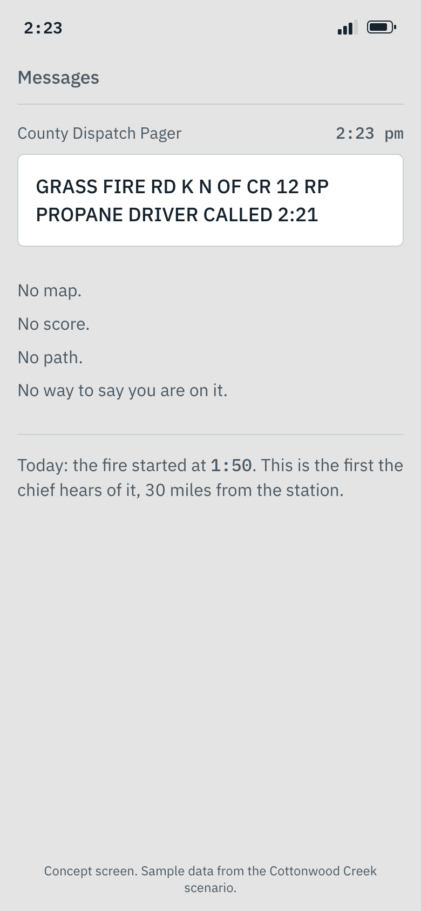
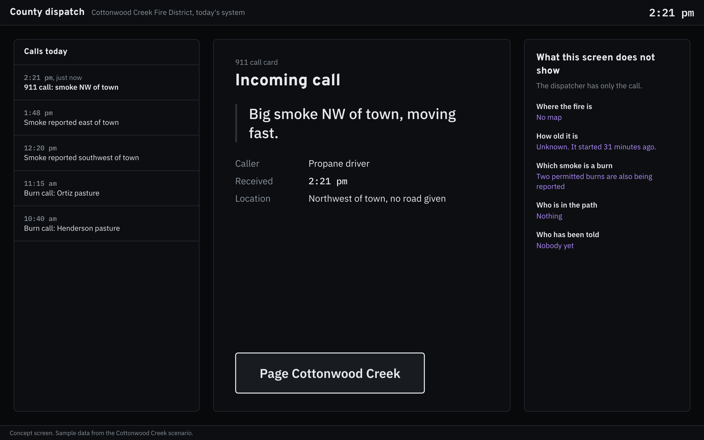
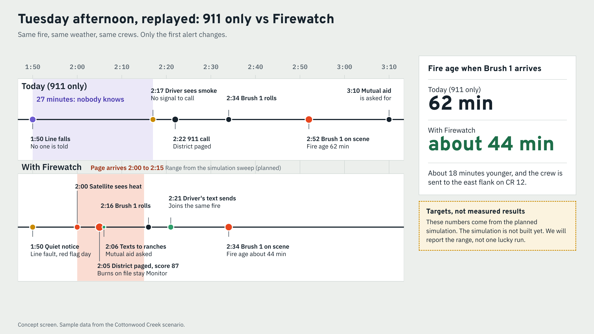
Today: 911 at 2:21, on scene 2:52.
Firewatch: paged about 2:05, on scene about 2:34.
These are targets from the planned simulation. They are not results yet.
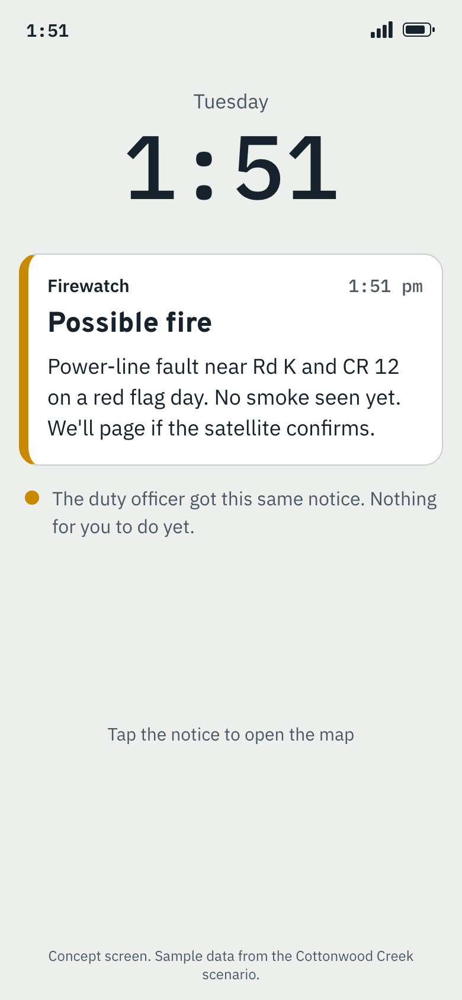
The chief and duty officer see the fault, the weather and the wait for the satellite. No page goes out yet.
A fault alone is only a watch, so windy days do not wear out the alert.
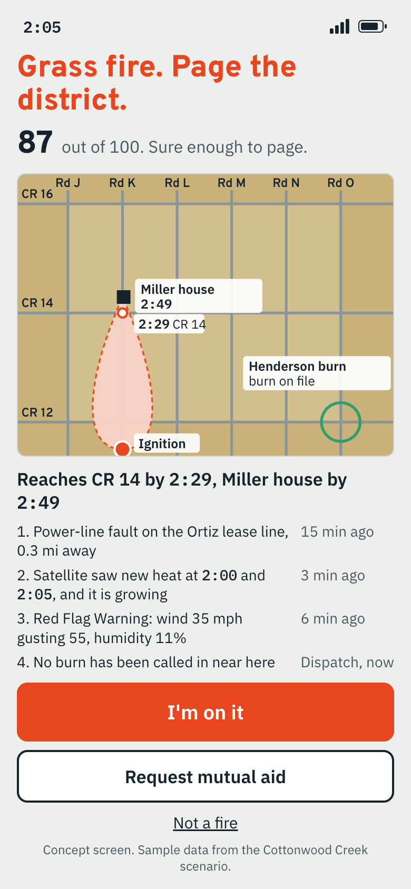
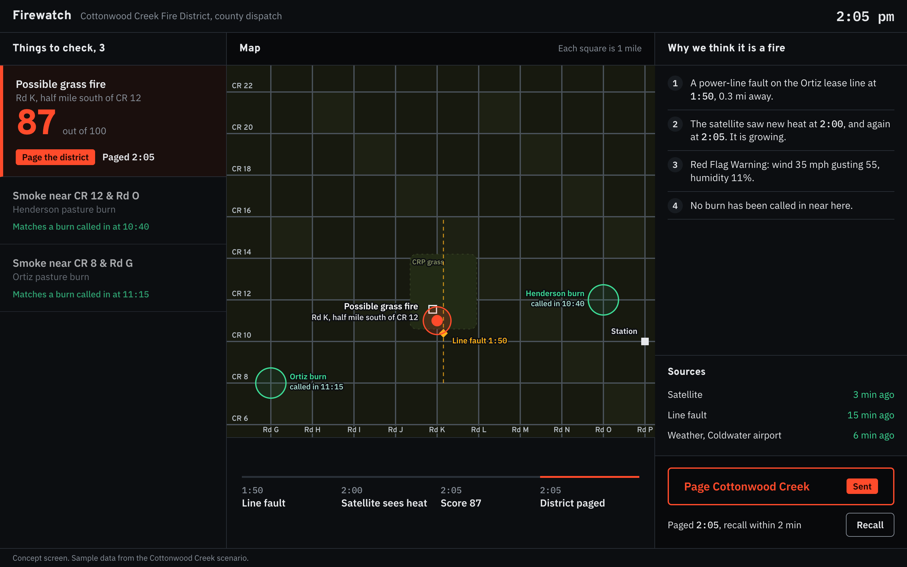
Score 87. Page the district.
Henderson and Ortiz burns stay "Monitor".
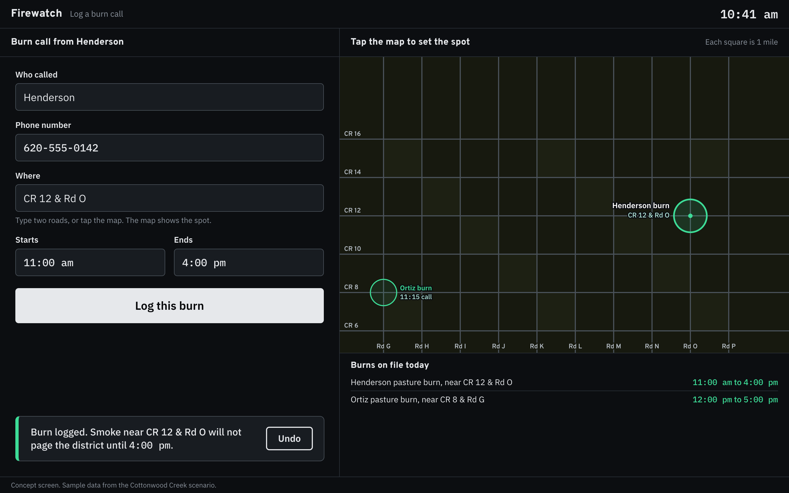
The Henderson burn was called in at 10:40. The Ortiz burn at 11:15.
A hotspot near a logged burn scores down and says why. A burn missing from the log can still alert, and one tap dismisses it.
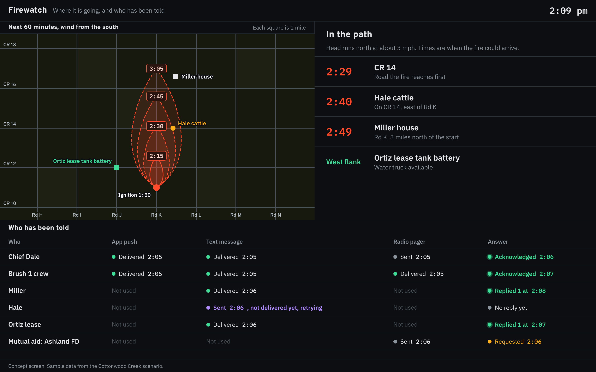
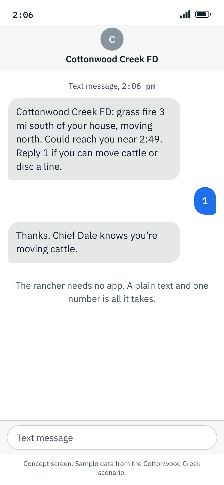
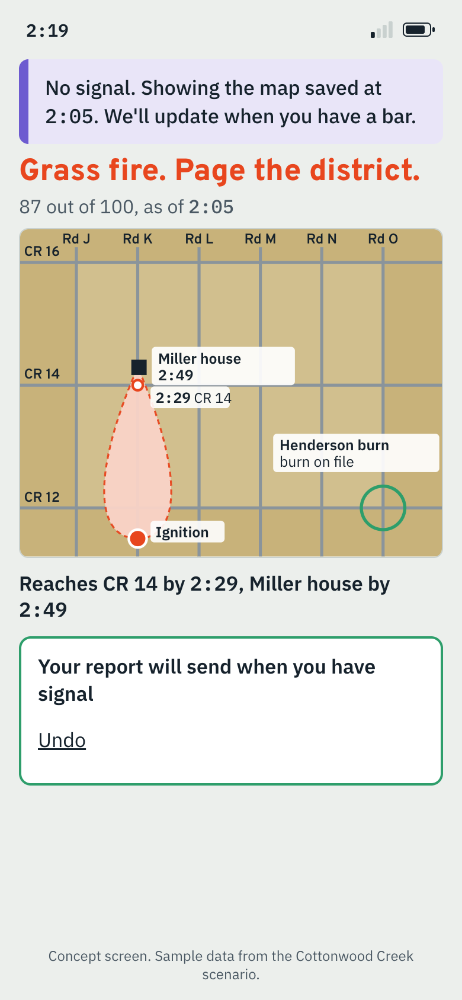
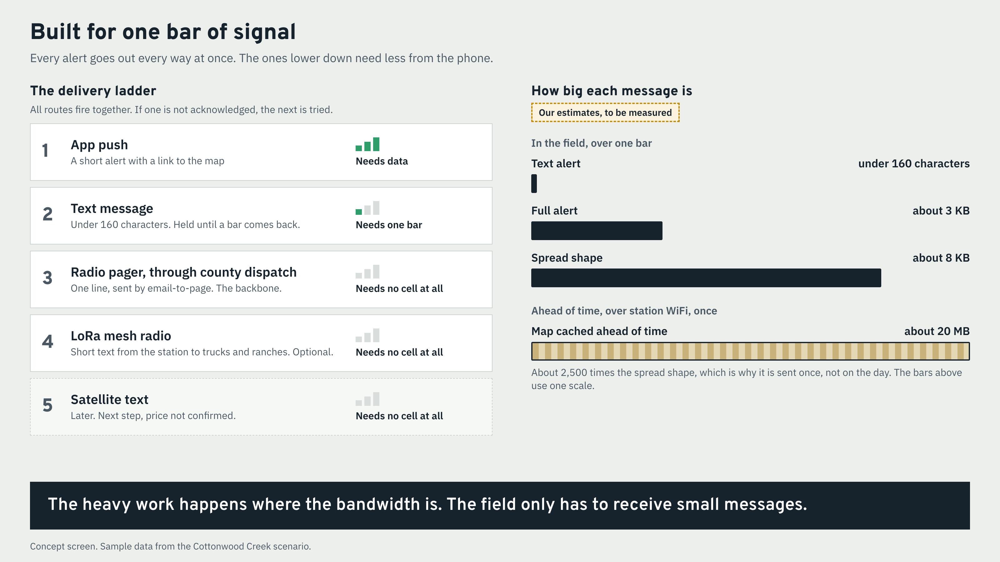
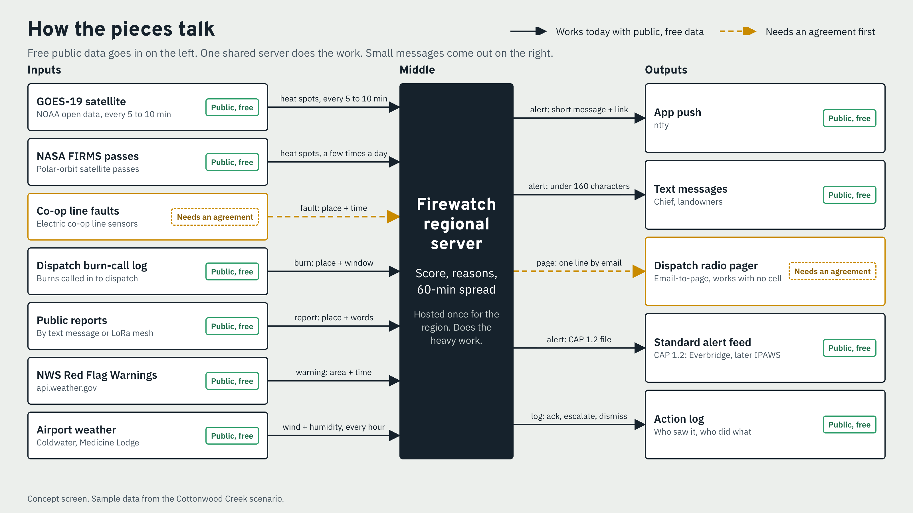
Works today with free, public data.
Needs an agreement first: the co-op line faults and the dispatch radio pager.
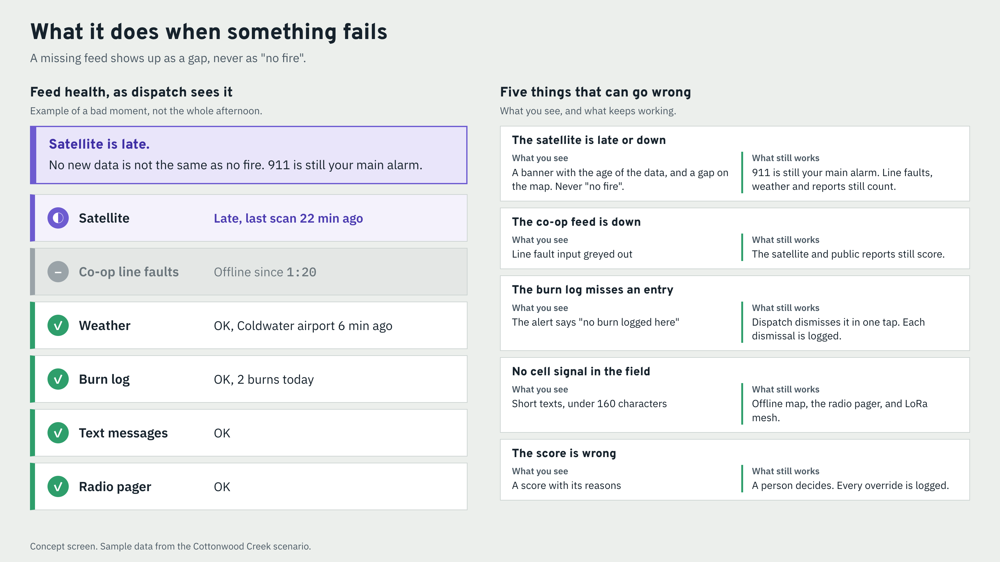
| If this fails | This still works |
|---|---|
| Satellite late or down | Banner shows data age. A gap is never shown as "no fire". |
| Co-op feed down | Fault input greys out. Satellite and reports still score. |
| Burn missing from log | It can alert, says "no burn logged here", and one tap dismisses it. |
| No cell in the field | Short texts, offline map, pager, optional mesh. |
| Score is wrong | A human decides and every override is logged. |
| Risk | Likelihood | Impact | How we reduce it |
|---|---|---|---|
| The co-op line has no fault telemetry (old oil-lease taps may have only fuses) | Medium | High | Satellite alone still pages about 2:05 to 2:15. Ask the co-op to share what it can see. |
| GOES misses or is slow on a small early fire (to be measured) | Medium | High | Log scan, file and ingest times. Test Starbuck. Keep FIRMS and reports as backups. |
| Fault-only alerts on windy days cause alert fatigue | High | Medium | A fault alone is a quiet watch. Only fault plus satellite or a report pages. |
| The burn log is incomplete or late | Medium | Medium | Reason text says "no burn logged here". One-tap dismiss, logged. Keep the old rules as backup. |
| SMS carrier registration or filtering delays texts | Medium | High | Send push, text and pager at once. The pager needs no cell. |
| Dispatch or the co-op will not sign a data agreement | Medium | High | Start with free public data. Offer a one-page pilot. Keep manual entry. |
| Landowner phone numbers are private | Medium | Medium | Use the county Everbridge opt-in list. Store numbers only for the district. |
| The regional server goes down | Low | High | Pager and 911 are untouched. A status banner shows the outage. Redeploy from one script. |
| People over-trust the score | Medium | High | Show the reasons and data age. A human decides. Log every override. |
| Who pays |
|---|
| Region or state hosts the software. |
| Co-ops pay for their line sensors. |
| Optional hardware: Kansas Forest Service VFA (matching funds) or USDA CWDG (10 to 25% match). |
Time to stand up: about a day (our estimate) for district boundary, roads, contacts, pager email and burn entry. The co-op feed takes weeks (our estimate) of agreements.
Why not new sensors: a 2026 DHS audit found N5 wildfire sensors "did not consistently detect fires or alert state and local partners", and wind hurt them.
Historical test: first satellite look vs. the Starbuck ignition at 11:51 AM CST (NWS).
Measured GOES delay, from our own log.
A simulation sweep that reports a range of minutes saved.
The National Weather Service reports 83 percent of satellite notifications arrived before local 911 calls.
Pilot with an electric co-op.
Add a Pyronear tower camera.
FireSat early adopters get operational data from Q4 2026.
Hand confirmed events to autonomous responders, such as those EMBERPOINT is "targeting demonstrations in 2026" for.